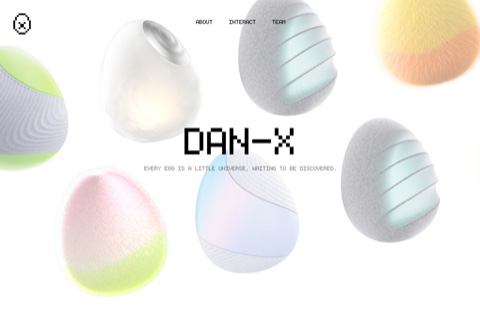
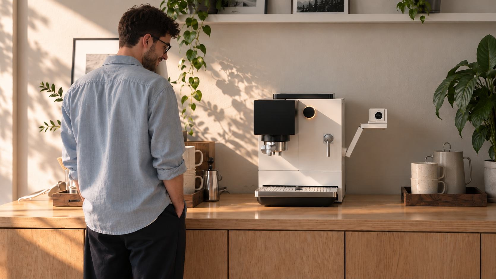
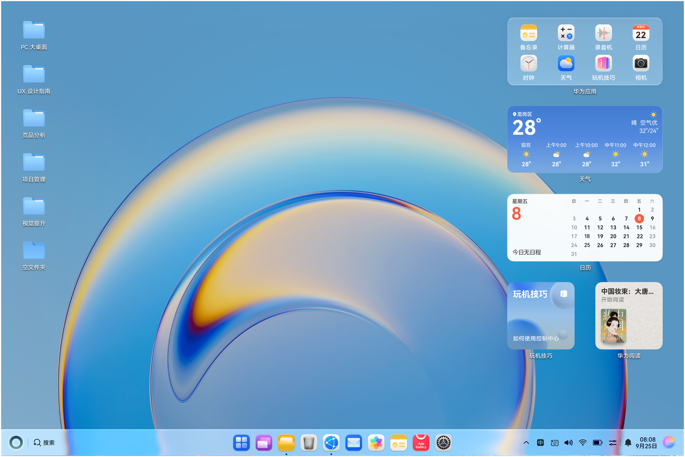
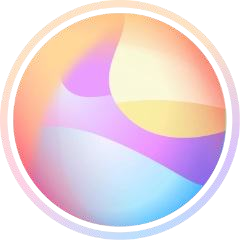

交互设计
UX 设计指南
人机交互技术...
HarmonyOS 体验
竞品研究
空间交互
＋
产品原型

CUPPA
上次关注：比较直接与间接的交互形式
上次打开时间 昨天 18:40
Andy

新建项目空间画布
×
项目名称
新建并进入

下一步
×
分别单独分析
寻找相似案例
Aa
自定义输入
↑
CUPPA
搜索范围 · 可多选
清空
‹ 返回创建菜单
创建资源卡片
创建想法卡片
创建设计对象卡片
创建卡片
›
创建区域
▱
创建连线
↗
−
100%
+
选择画布卡片以取用内容
取消
全部
资源卡片
想法卡片
设计对象
×